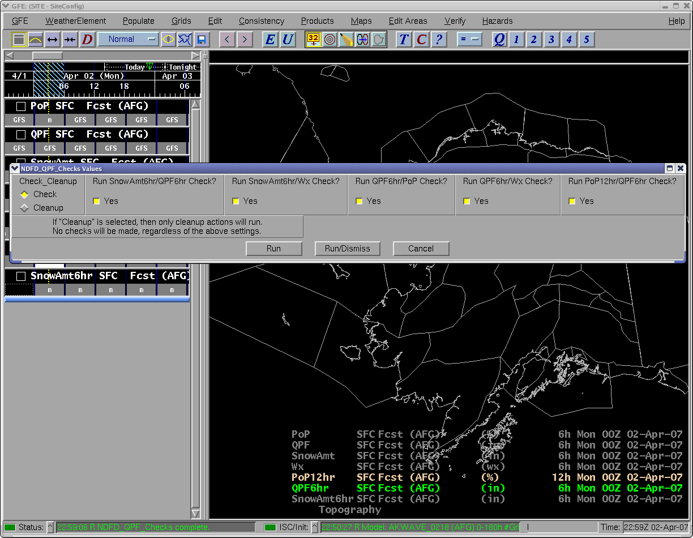
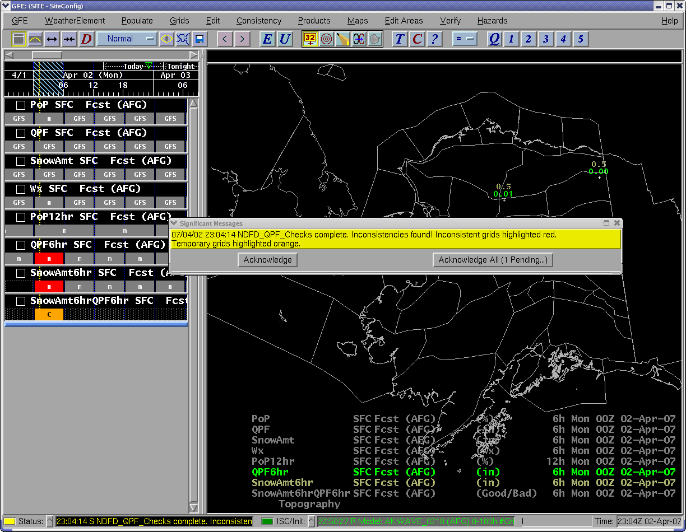
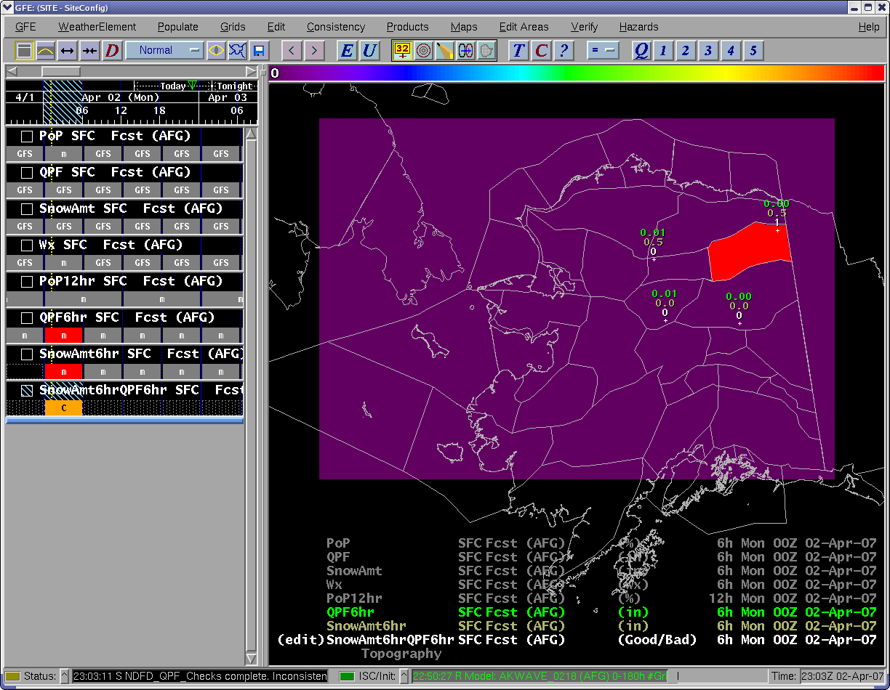
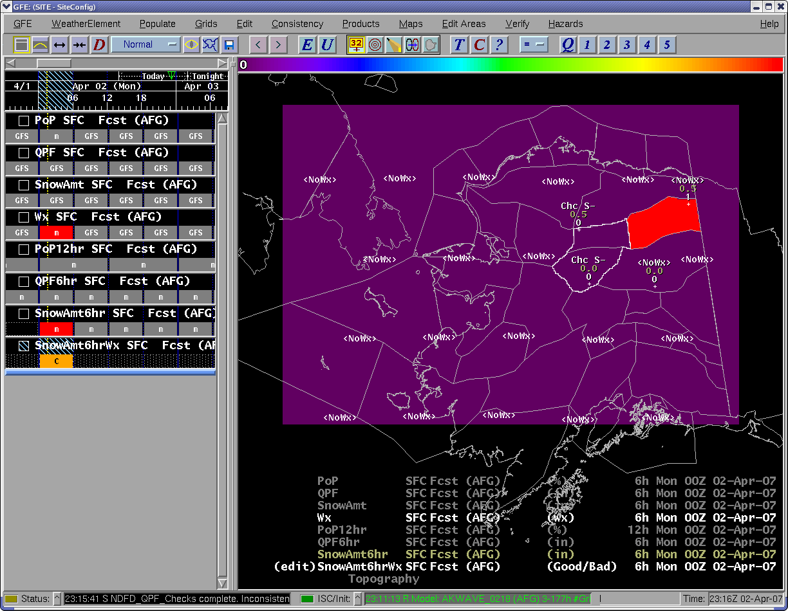
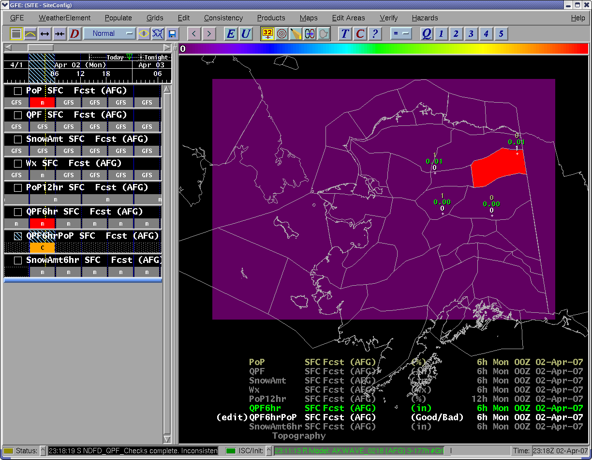
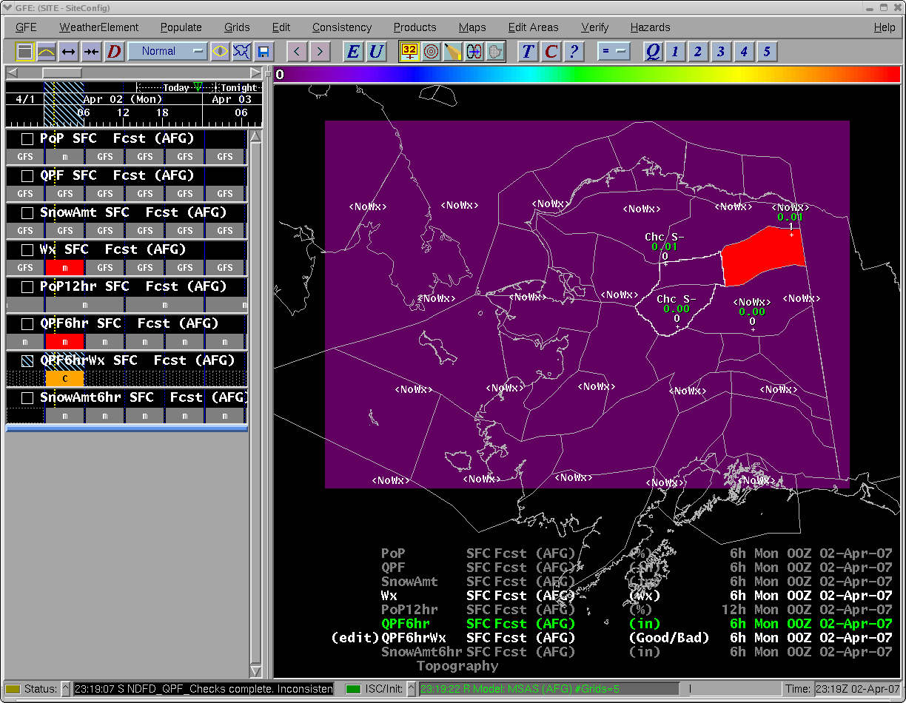
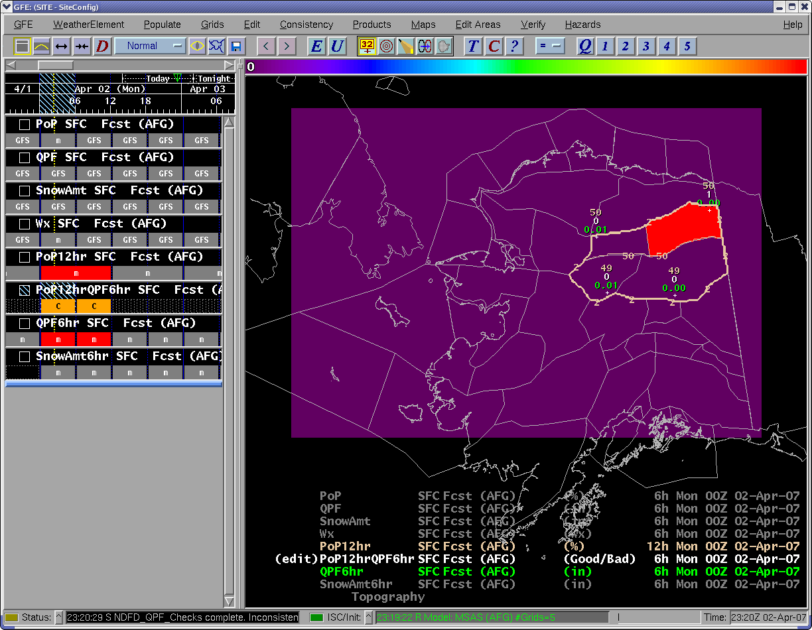
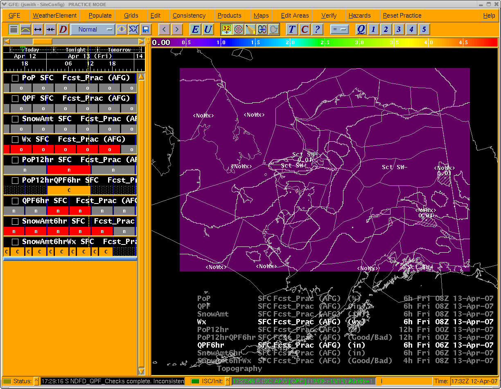
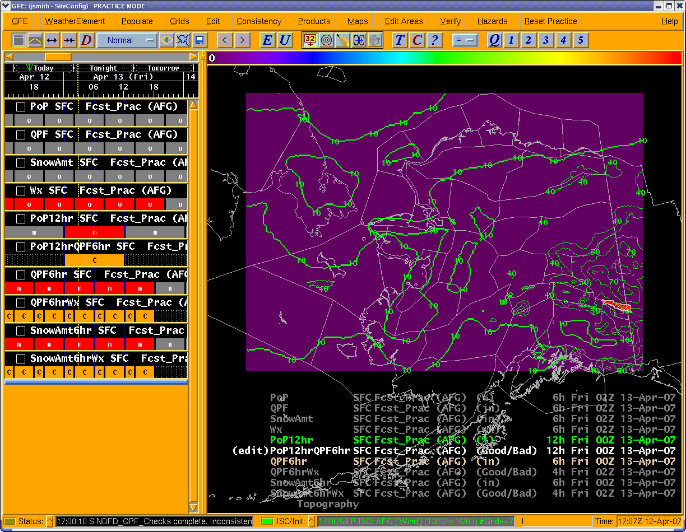
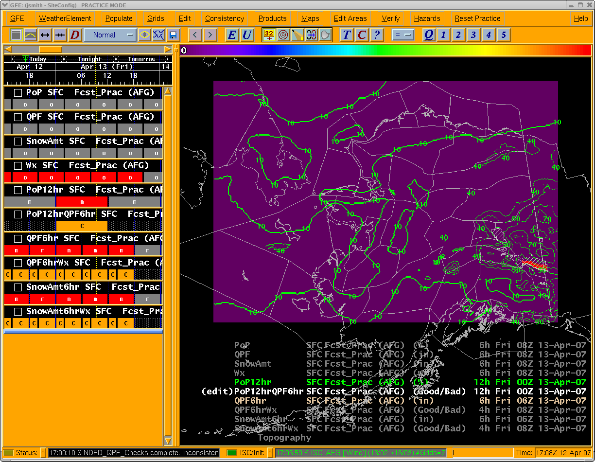

NDFD_QPF_Checks
What the Procedure Does
The NDFD_QPF_Checks procedure performs two,
simple consistency checks on the SnowAmt6hr grid:
- 1.Where SnowAmt6hr >= 0.5 inches, checks to ensure QPF6hr >= 0.01 inches.
- 1.Where SnowAmt6hr >= 0.1 inches, checks to ensure at least one of the overlapping Wx grids
contains S, SW, and/or IP. The frozen precipitation type can be mixed with any liquid and/or
freezing precipitation type. The procedure does not consider probability, coverage, intensity, and/or
visibility of the frozen precipitation in the Wx grid.
The procedure also performs two, simple consistency checks on the QPF6hr grid:
- 1.Where QPF6hr > 0.0, checks to ensure at least one of the overlapping PoP grids is greater than
zero. The PoP grids here are the “floating” PoP grids.
- 1.Where QPF6hr > 0.0, checks to ensure that at least one of the overlapping Wx grids has at least
one of the precipitating Wx types, which includes L and ZL. The check is made against the Wx type only.
The procedure does not consider probability, coverage, intensity, and/or visibility of the precipitating
Wx type.
Finally, the procedure performs a simple check on the PoP12hr grid: Where PoP12hr >= 50%, checks to ensure
at least one of the overlapping QPF6hr grids >= 0.01 inches.
Usage Considerations
- It is assumed and recommended that the user derives the QPF6hr, SnowAmt6hr, and PoP12hr grids
using other GFE procedures and/or smart tools. The National Smart Tool/Smart Initialization Team (STSIT)
strongly recommends the Collaborate_PoP_SnowAmt_QPF procedure for this task. If NDFD_QPF_Checks finds
inconsistencies, then you will need to:
- Fix the QPF, SnowAmt, PoP, and/or Wx grids;
- Regenerate the QPF6hr, SnowAmt6hr, and PoP12hr grids;
- Re-run the NDFD_QPF_Checks procedure.
Finally, the “Send Grids to NDFD” script does not send the QPF6hr, SnowAmt6hr, or PoP12hr grids to NDFD.
It still sends the QPF, SnowAmt, PoP, and Wx grids. Thus, it is imperative that whatever means you use to
derive QPF6hr, SnowAmt6hr, and PoP12hr grids emulates what the NDFD server does to create its grids from
the grids sent from the GFE. The Collaborate_PoP_SnowAmt_QPF meets this need.
- For all checks, if the initial threshold is not triggered, then the grids are considered consistent by
definition. In other words:
- If SnowAmt6hr < 0.5 inches, then SnowAmt6hr and QPF6hr are always consistent.
- If SnowAmt6hr < 0.1 inches, then SnowAmt6hr and Wx are always consistent.
- If QPF6hr < 0.01 inches, then QPF6hr and PoP are always consistent.
- If QPF6hr < 0.01 inches, then QPF6hr and Wx are always consistent.
- If PoP12hr < 50%, then PoP12hr and QPF6hr are always consistent.
Later in the documentation, a reference to “control” parameters/grids will be made. For each check listed
above, the first parameter listed is what will be called the “control” parameter/grid.
- For the checks that involve SnowAmt6hr, QPF6hr, and PoP12hr, the start time and duration of those
grids are verified. If any of these grids have been stretched, the procedure will not perform the
associated check and will generate an urgent GFE message. For the SnowAmt6hr and QPF6hr grids, they must
start at 00, 06, 12, or 18 UTC and be exactly 6 hours in duration. For the PoP12hr grids, they must start
at 00 or 12 UTC and be exactly 12 hours in duration.
- With no time range selected in the grid manager, the procedure will use 0 to 240 hours, with respect
to UTC, as the time range. If all of the checked grids exist out to 240 hours, they will all be checked.
In many WFOs, some of the checked grids do not go out to 240 hours. In those cases, the checks will only
be done for the time range of the “control” parameter. For example, if your SnowAmt6hr grid spans the 0
to 72 hour time range, then the two SnowAmt6hr checks will stop at 72 hours. This same idea holds for
swept out time ranges, i.e., if you sweep out a time range beyond the end of one of the “control”
parameters, the check will stop with the last “control” parameter grid.
- The procedure makes some attempts to identify missing grids. (It should be noted that these attempts
are not very robust. There are probably just as many cases of missing grids being identified as there are
cases of missing grids not being identified.) There is an underlying assumption in those attempts that the
“control” parameter will not extend later in time than the parameter it is being checked against. This
assumption breaks down for the PoP12hr/QPF6hr check because NDFD requires the PoP12hr grid at later time
steps than the QPF6hr grid. To avoid generating a lot of erroneous missing QPF6hr grid warning messages,
the procedure will compare the end times of the two grid sets. If the PoP12hr grid does extend farther in
time than the QPF6hr grid, then the time range used in the PoP12hr/QPF6hr check will be dynamically
adjusted back to the end of the last QPF6hr grid which has an end time of either 00 or 12 UTC.
- When the procedure is installed, it can be configured to use an edit area which covers just your CWA.
If this is done, then the procedure will only return inconsistencies over that edit area. If this is not
done, or the procedure has a problem with the CWA edit area, then the procedure will run over the entire
domain. In the latter case, this means you can get flagged for inconsistent points in your GFE domain that
are totally outside your CWA. In no case will the procedure run over any edit areas drawn in the GFE
Spatial Editor window. It always runs over the whole GFE domain.
- 1.For each check, the procedure loops over the available “control” grids. For each “control” grid,
the overlapping “non control” grids are checked for consistency. For the checks involving PoP and Wx,
it's possible for the “control” grid and the PoP/Wx grid to not be aligned. By this, it is meant a PoP/Wx
grid could have a start time earlier than the start time of the “control” grid or a PoP/Wx grid could
have an end time later than the end time of the “control” grid. While the procedure doesn't care if
this is the case, the results, if there are inconsistencies, could be difficult to interpret since the
PoP/Wx grid is not only being compared to the current “control” grid but also to the previous or next
“control” grid. For example, let's say you're running the QPF6hr/Wx check. The QPF6hr grid being check
runs from 06 to 12 UTC. However, overlapping this QPF6hr grid are two Wx grids. One runs from 06 to
09 UTC and the other runs from 09 to 15 UTC. The first grid presents no problems since it's aligned
with the QPF6hr grid. However, the second grid extends beyond the end of the QPF6hr grid (15 UTC
vs 12 UTC). If an inconsistency arises and the solution is to change the Wx grid, the change will
have to be made such that two QPF6hr grids are consistent with it, the one running from 06 to 12 UTC
and the on running from 12 to 18 UTC.
- For the SnowAmt6hr/Wx check, the QPF6hr/Wx check, and the PoP12hr/QPF6hr check, any temporary
inconsistent grid will span the time range of the “controlling” grid. The temporary inconsistent grid
will show the points where ALL of the “non controlling” grids were inconsistent. See figures 8 through
11.
When the procedure is run, the forecaster is presented with several choices. The first is whether to run
checks or to “Cleanup”. By default, the procedure will run checks. The “Cleanup” option will undo any
highlighting and remove any temporary grids. With the “Cleanup” option selected, all other options on the
GUI are ignored. If you leave “Check” selected, then you can choose which of the checks you wish to run by
toggling on and off the appropriate button. By default, all checks will be run:

The procedure will create temporary grids which show where the inconsistencies occur. The values in all the
temporary grids are either zero (consistent) or one (inconsistent). The temporary grid names are a
concatenation of the two grid names used in the check with the “control” grid name first. The procedure
can also be configured to highlight both the temporary grids and the bad “source” grids. In the default
configuration, highlighting is turned on with the bad “source” grids colored red and the temporary grids
colored orange. (See Figures 3 through 7.) The procedure does not modify any grids. It's left up to the
forecaster to determine how, if at all, to handle the inconsistencies. The issue of a check only versus a
check/force procedure was discussed by the STSIT and the consensus recommendation was a check only
procedure. The STSIT feels strongly that there are no meteorologically sound ways to force consistency
of these grids, but we are always willing to listen to and consider other points of view. Any
inconsistencies will pop up a “significant” GFE message:

This is an example of how the GFE will look after the procedure is run and there are inconsistencies.
In the grid manager, you can see one temporary grid, SnowAmt6hrQPF6hr, has been created and is
highlighted in the color orange. The corresponding SnowAmt6hr and QPF6hr grids have been highlighted
in the color red. In the above figure, there is a also second “significant” message. Note the
“Acknowledge All (1 Pending...)”. That message tells the user the procedure ran over a swept-out time
range. Since the procedure has no way of knowing whether the user meant to sweep out a time range, It was
decided to put in a “significant” pop-up to “remind” the user. Finally, while not shown, there are conditions
that can generate an “Urgent Message” pop-up, the ones that are colored red. Some conditions that cause
urgent messages are: missing grids, locked grids, and bad time constraints.

The SnowAmt6hr/QPF6hr check enforces the following rule:
If SnowAmt6hr >= 0.5 in, then QPF6hr >= 0.01 in.
In the above figure, there are four sample points, each in a unique zone. Starting in the “upper-left”
zone and moving clockwise, the sample points have the following values:
SnowAmt6hr = 0.5 in, QPF6hr = 0.01 in, SnowAmt6hrQPF6hr = 0: This is a good result.
SnowAmt6hr = 0.5 in, QPF6hr = 0.00 in, SnowAmt6hrQPF6hr = 1: This is a bad result.
SnowAmt6hr = 0.0 in, QPF6hr = 0.00 in, SnowAmt6hrQPF6hr = 0: This is a good result.
SnowAmt6hr = 0.0 in, QPF6hr = 0.01 in, SnowAmt6hrQPF6hr = 0: This is a good result.

The SnowAmt6hr/Wx check enforces the following rule:
If SnowAmt6hr >= 0.1 in, then one of the overlapping Wx grids must contain S, SW, or IP. Only the Wx
type is important to this check. The Probability/Coverage, Intensity, and Visibility are all ignored.
Also, the frozen types can be mixed with the liquid and/or freezing types.
In the above figure, there are four sample points, each in a unique zone. Starting in the “upper-left”
zone and moving clockwise, the sample points have the following values:
SnowAmt6hr = 0.5 in, Wx = Chc S-, SnowAmt6hrWx = 0: This is a good result.
SnowAmt6hr = 0.5 in, Wx = NoWx, SnowAmt6hrWx = 1: This is a bad result.
SnowAmt6hr = 0.0 in, Wx = NoWx, SnowAmt6hrWx = 0: This is a good result.
SnowAmt6hr = 0.0 in, Wx = Chc S-, SnowAmt6hrWx = 0: This is a good result.

The QPF6hr/PoP check enforces the following rule:
If QPF6hr > 0.0 in, then at least one of the overlapping PoP grids > 0%.
In the above figure, there are four sample points, each in a unique zone. Starting with the “upper-left”
zone and moving clockwise, the sample points have the following values:
QPF6hr = 0.01 in, PoP = 1%, QPF6hrPoP = 0: This is a good result.
QPF6hr = 0.01 in, PoP = 0%, QPF6hrPoP = 1: This is a bad result.
QPF6hr = 0.00 in, PoP = 0%, QPF6hrPoP = 0: This is a good result.
QPF6hr = 0.00 in, PoP = 1%, QPF6hrPoP = 0: This is a good result.

The QPF6hr/Wx check enforces the following rule:
If QPF6hr > 0.00 in, then at least one of the overlapping Wx grids must contain a precipitating Wx type.
These are: R, RW, L, S, SW, IP, ZR, and ZL Only the weather type is considered in the check. The
Probability/Coverage, Intensity, and Visibility are all ignored. In the above figure, there are four
sample points, each in a unique zone. Starting with the “upper-left” zone, the sample points have the
following values:
QPF6hr = 0.01 in, Wx = Chc S-, QPF6hrWx = 0: This is a good result.
QPF6hr = 0.01 in, Wx = NoWx, QPF6hrWx = 1: This is a bad result.
QPF6hr = 0.00 in, Wx = NoWx, QPF6hrWx = 0: This is a good result.
QPF6hr = 0.00 in, Wx = Chc S-, QPF6hrWx = 0: This is a good result.

The Pop12hr/QPF6hr check enforces the following rule:
If Pop12hr >= 50%, then at least one of the overlapping QPF6hr grids must be > 0.00 in.
This is the first figure where the “controlling” grid is shown with more than one overlapping
“non controlling” grid. The second QPF6hr grid, which is not shown, has 0.00 in assigned to
the entire grid, which means it cannot be consistent with the PoP12hr grid where it is >= 50%.
In the above figure, there are four sample points, each in a unique zone. Starting with the
“upper-left” zone and moving clockwise, the sample points have the following values:
PoP12hr = 50%, QPF6hr = 0.01 in, PoP12hrQPF6hr = 0: This is a good result.
PoP12hr = 50%, QPF6hr = 0.00 in, PoP12hrQPF6hr = 1: This is a bad result.
PoP12hr = 49%, QPF6hr = 0.00 in, PoP12hrQPF6hr = 0: This is a good result.
PoP12hr = 49%, QPF6hr = 0.01 in, PoP12hrQPF6hr = 0: This is a good result.

The edit areas were constructed from the following query:
wxContains(Wx,[],['', 'BD', 'BN', 'BS', 'F', 'FR', 'H', 'IC', 'IF', 'K', 'T', 'VA',
'WP', 'ZF', 'ZY',[],[],[]) & (QPF6hr > 0) & ISC_Send_Area (This all fits one the query
line in the GFE.) Explanation of this figure follows the screen print below.

The edit areas were constructed from the following query:
wxContains(Wx,[],['', 'BD', 'BN', 'BS', 'F', 'FR', 'H', 'IC', 'IF', 'K', 'T', 'VA',
'WP', 'ZF', 'ZY',[],[],[]) & (QPF6hr > 0) & ISC_Send_Area (This all fits one the query
line in the GFE.) The query simulates the inconsistency for this check: Where QPF6hr > 0,
the Wx grid has no precipitable type.
The two previous screen shots show a case where two “non controlling” grids (Wx) are
individually inconsistent with the “controlling” grid (QPF6hr), but together are consistent.
In other words, everywhere the “first” Wx grid is inconsistent, the “second” Wx grid is consistent.
Similarly, everywhere the “second” Wx grid is inconsistent, the “first” Wx grid is consistent.
Since, together, the two Wx grids are consistent with the QPF6hr grid, there is no QPF6hrWx
temporary grid in either of the last two screen shots.

The edit areas shown are from the following query:
(PoP12hr >= 50) & (QPF6hr < (0.01-0.0001)) & ISC_Send_Area
Explanation of this figure follows the screen print below.

The edit areas shown are from the following query:
(PoP12hr >= 50) & (QPF6hr < (0.01-0.0001)) & ISC_Send_Area
This simulates the inconsistent condition of the check: Where PoP12hr >= 50, QPF6hr = 0.
This example shows a case where one of the QPF6hr grids (06-12 UTC grid) is more inconsistent
with the PoP12hr grid than the other QPF6hr grid (00-06 UTC). The temporary PoP12hrQPF6hr
inconsistent grid has the value 1 (bad) only where both QPF6hr grids are inconsistent with the
corresponding PoP12hr grid.
Tips
If you have inconsistencies, here's an example of how you can quickly generate edit areas
for the inconsistent areas:
- Left-click on the “?” to open the query dialog.
- Under “Weather Elements”, there should be at least one temporary grid element listed.
Left-click on one of them, then left-click on the “==”, and finally left-click on the
number “1”. Then, left-click on “Submit”.
- Move/hide/cancel the query dialog. Now, you can make an temporary grid editable,
assign a value or run a tool and these actions will apply to the inconsistent areas only.